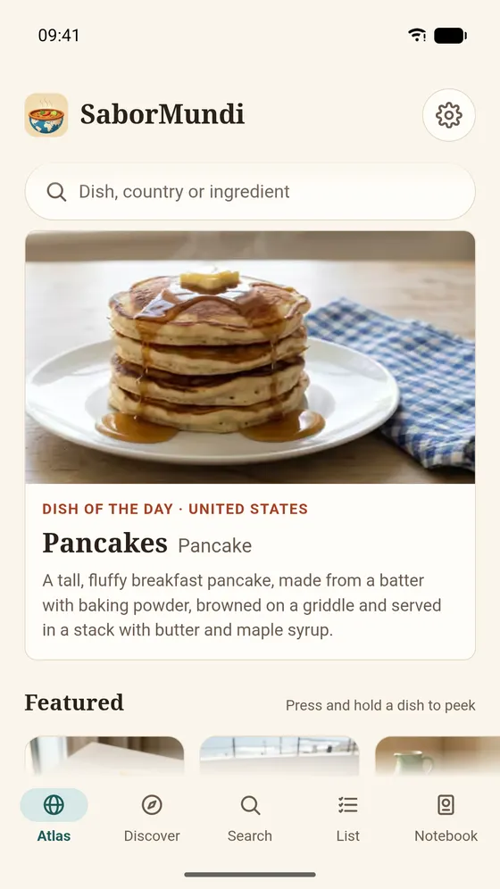
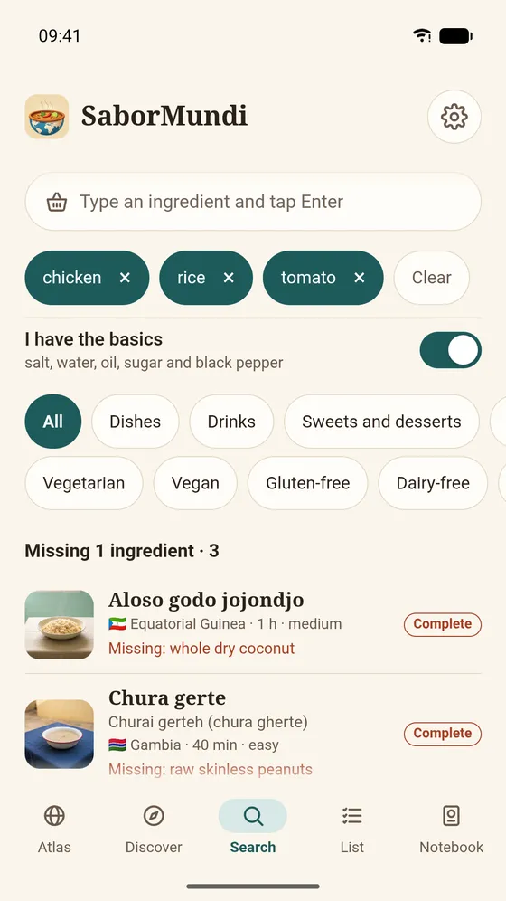
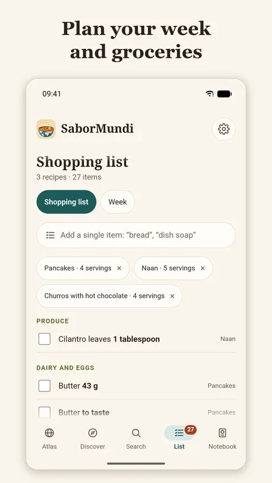

首页
从一道世界美食开始。
首页展示今日菜品，附有照片和发源地。可以按名称或描述搜索，也可以浏览精选食谱。
世界食谱
来自世界各地的传统食谱，每道都附有照片、食材、分步做法、过敏原和这道菜的故事。全部在手机里，无需联网，也无需账号。
免费下载 · 按月或按年订阅，或一次性购买，即可解锁全部
本应用提供葡萄牙语、英语和西班牙语版本。


为喜欢下厨、想在动手前先了解一道菜的人而做。
首页
首页展示今日菜品，附有照片和发源地。可以按名称或描述搜索，也可以浏览精选食谱。
食谱
每份食谱都有照片、食材、做法、过敏原和这道菜的故事。可调整份量，并选择公制或美制计量。
烹饪模式
在烹饪模式下，屏幕以大字一次只显示一个步骤，计时器在您做菜时始终可见。

朗读
设备自带的语音为您朗读食谱，双手不用离开灶台。

预览
部分食谱免费完整开放。其他食谱可预览：照片、故事和过敏原。

家里有
告诉 SaborMundi 厨房里有什么，它会显示能做的食谱和还缺的食材。可按饮食筛选：素食、纯素、无麸质、无乳制品。

购物清单
把所选食谱的食材汇总到按区域分类的购物清单里，再添上其他需要的东西。

我的厨房
标记与您同住的人的过敏原。含有其中任何一种的食谱会在顶部显示提醒，并突出显示该食材。

下载免费，部分食谱完整开放，方便您先试用。按月或按年订阅，或一次性购买，即可解锁全部食谱。
应用界面（英文）。




下载免费，部分食谱免费完整开放。其他食谱可预览照片、故事和过敏原。按月或按年订阅，或一次性购买，即可全部解锁。没有广告。
可以。食谱、搜索、烹饪模式和购物清单在离线时都能使用。只有购买需要通过应用商店。
葡萄牙语、英语和西班牙语。
不需要，没有注册。要把数据转到新手机，请导出备份。
食谱标明了主要过敏原和安全提示，但品牌和食材各不相同。请务必查看每件产品的标签，并遵循医生或营养师的建议。
在 iPhone、iPad 或 Android 上免费下载。